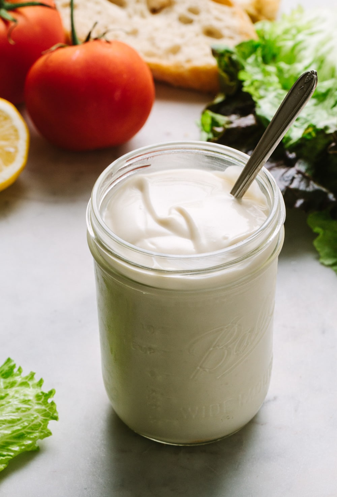

Vegan mayonnaise

Description:
Description
Czas przygotowania: 10 minut
Ingredients
- ½ szklanki aquafaby / 125 ml
- 1 łyżka płatków drożdżowych,
- 2 łyżeczki octu lub soku z cytryny
- ¾ łyżeczki musztardy
- ½ łyżeczki czarnej soli lub zwykłej soli
- ¼ łyżeczki syropu z agawy lub dowolnego innego słodzika
- 1 ¼ – 2 szklanki oleju roślinnego
Steps:
- Wszystkie składniki poza olejem umieścić w wysokim naczyniu blendera jak na zdjęciu imiksować przez 2 – 3 minuty na najwyższych obrotach do czasu, aż porządnie się spienią
- Następnie wlać olej – nie trzeba go kapać do środka jak w wypadku tradycyjnego majonezu, wystarczy po prostu wlać go do środka cienkim strumieniem. Gotowy majonez przełożyć do słoika, postarać się nie jeść go do każdego posiłku. Przechowywać w lodówce do 10 dni.